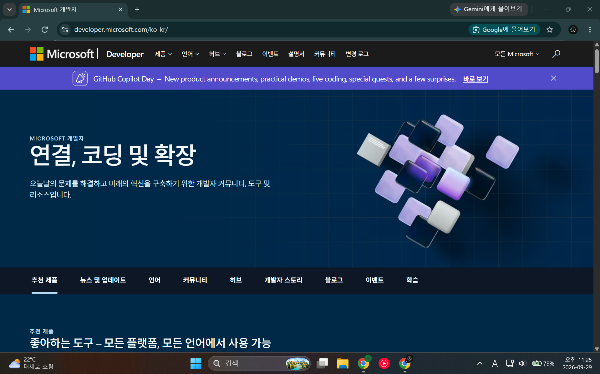
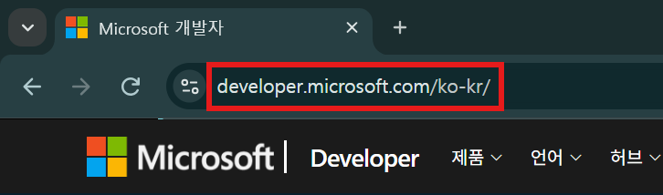
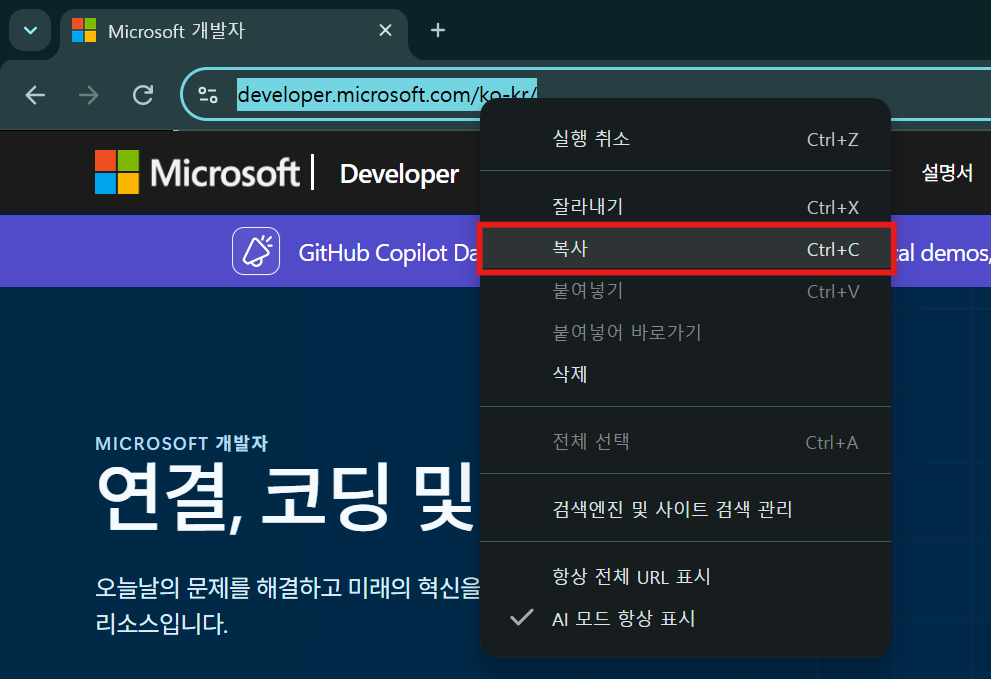
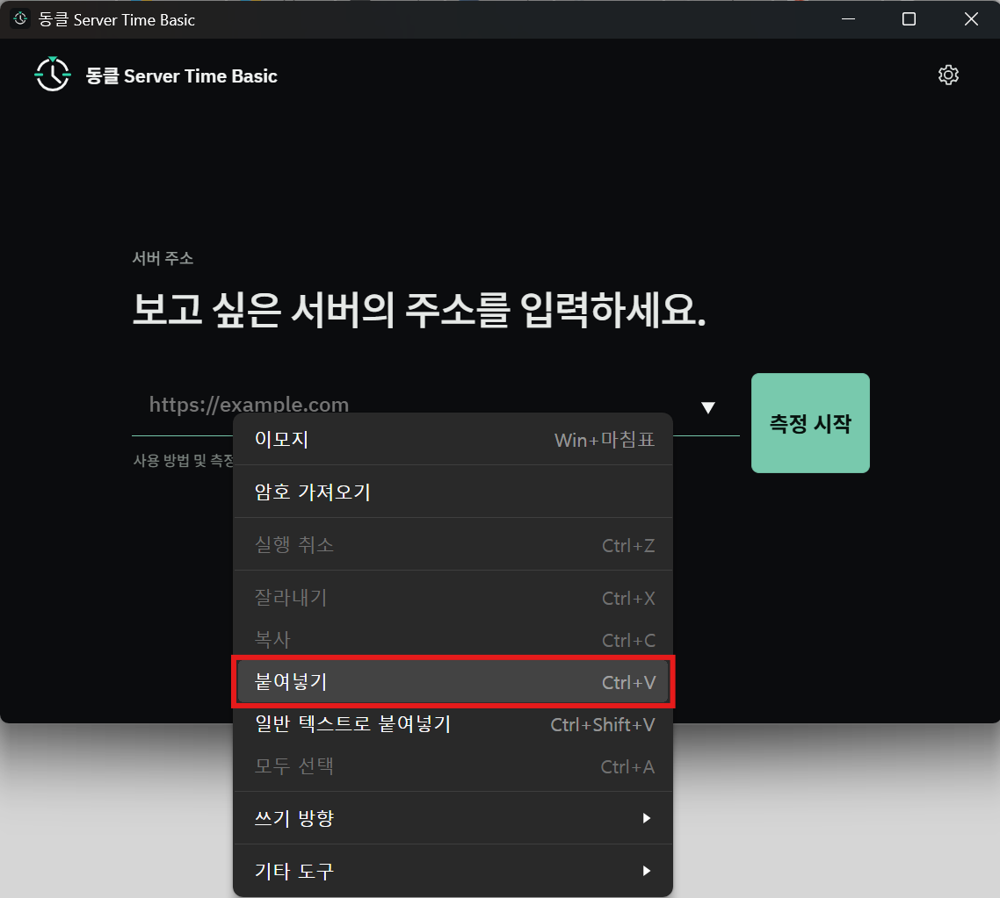
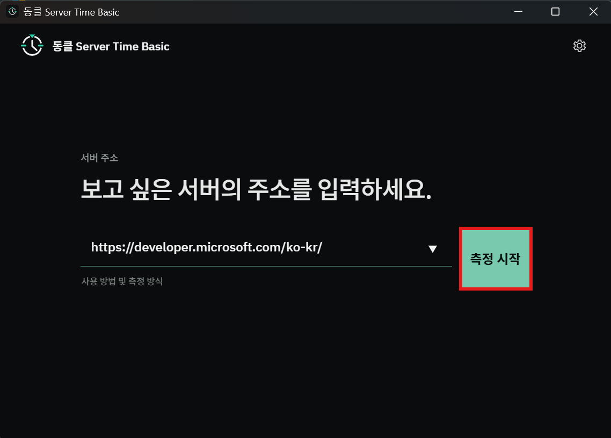
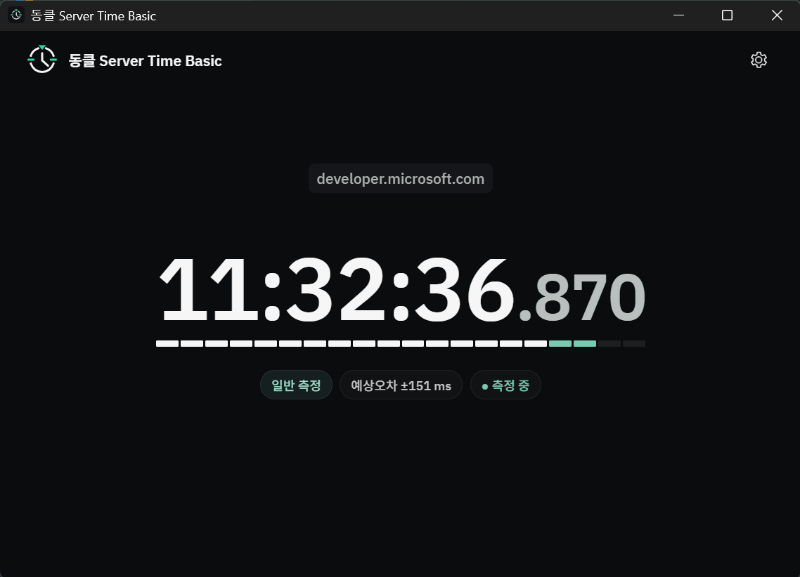
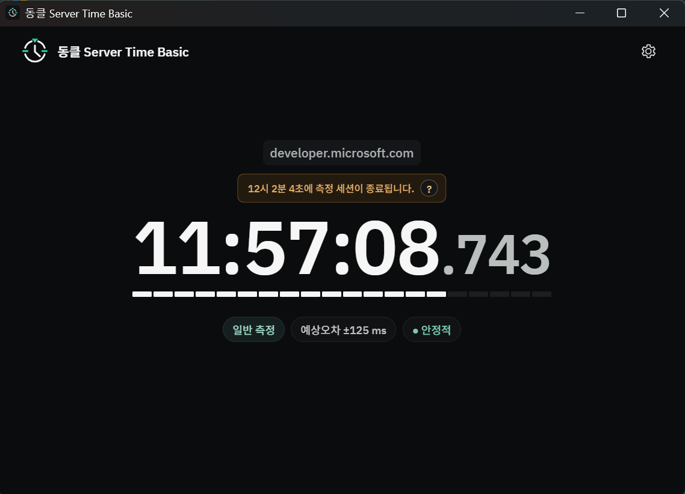
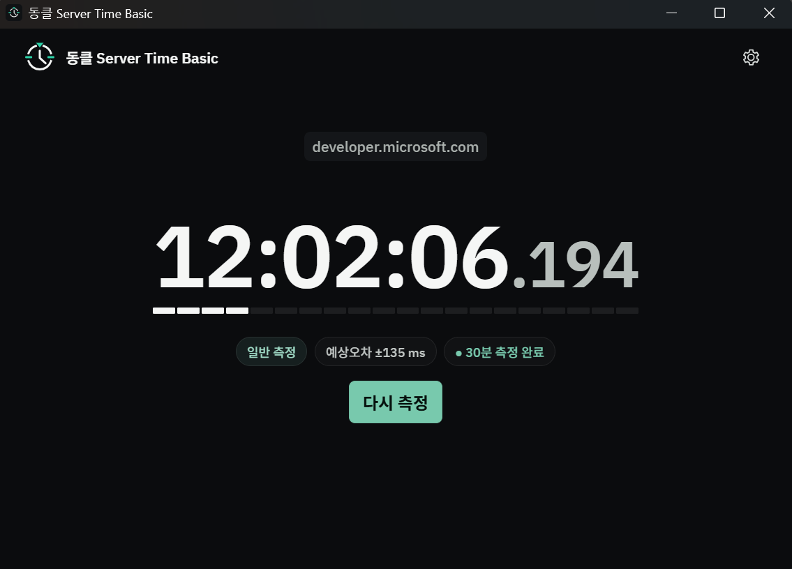

01
측정할 웹사이트를 엽니다.
서버시간을 확인하고 싶은 웹사이트를 브라우저에서 엽니다. 티켓팅, 수강신청, 예약 페이지처럼 실제로 시간을 확인할 대상 사이트를 기준으로 합니다.

DONGCLOCK BASIC GUIDE
확인하고 싶은 웹사이트의 주소를 복사해 DongClock Basic에 붙여넣고 측정을 시작하면 됩니다. 아래 화면은 실제 사용 흐름을 순서대로 보여줍니다.
서버시간을 확인하고 싶은 웹사이트를 브라우저에서 엽니다. 티켓팅, 수강신청, 예약 페이지처럼 실제로 시간을 확인할 대상 사이트를 기준으로 합니다.

브라우저 주소창에 표시된 HTTP 또는 HTTPS 주소가 DongClock에서 측정할 대상입니다.

주소창의 URL 전체를 선택해 복사합니다. 복사한 주소는 그대로 DongClock의 서버 주소 입력란에 사용할 수 있습니다.

DongClock Basic을 실행한 뒤 서버 주소 입력란에 복사한 URL을 붙여넣습니다. 주소를 직접 입력해도 됩니다.

주소를 확인한 뒤 측정 시작을 누릅니다. DongClock이 대상 웹사이트의 HTTP 응답과 네트워크 왕복 시간을 관찰하기 시작합니다.

처음에는 여러 표본을 모으며 서버시간 추정값과 예상오차를 갱신합니다. 측정 직후의 값 하나만 보기보다 잠시 관찰하는 것이 좋습니다.

측정이 이어지는 동안 표시되는 서버시간과 상태, 예상오차를 확인할 수 있습니다. 네트워크와 서버 응답 특성에 따라 값은 계속 조정될 수 있습니다.

Basic의 측정 세션이 끝나면 최종 상태를 확인하고 필요할 때 다시 측정으로 새 세션을 시작할 수 있습니다.
